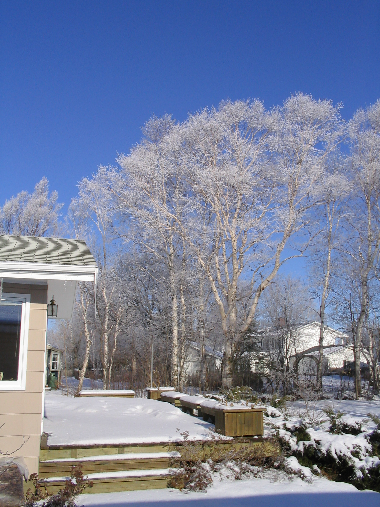

Christmas Greetings from the Island

Our Back Deck
Taken 2008
Greetings from PEI:
It’s been a good year; started right on time and every month was on schedule; and next year is expected to begin on January 1, at least on PEI.
My health is good, at least as far as I know, however, I plan to go to my doctor in January to see what he thinks.
I still plant a garden, go to my woodlot, and
do a bit of volunteer work. After a good many years, I have drawn both my Family Chronicles and my genealogy to a close. If any readers are interested in Black River information I have, please contact me at don@glendenning.net I am also writing some recollections of my work at Holland College.
Carol keeps on the go. She enjoys the cottage and her garden in the summer. Come winter, Carol really enjoys her bridge and, according to all reports, is very good at it. Other family members keep well also. Brian and Marie continue to live in Soccoro, NM; Brian’s work includes a great deal of travel. Granddaughter, Laura is finishing a Master’s degree at Carnegie Mellon University in Pittsburg; Granddaughter, Lisa and husband Kevin live in Seattle where Lisa is a student at Washington University. Janet continues to look after the taxpayer’s interests in Ottawa and, as I write, she and Mike Spollen are about to be married in St. Lucia.
As I write, Carol and I are planning a Christmas cruise in the Caribbean if all goes well, we plan to visit New Mexico later in the spring to see Brian and Marie. The Mediterranean cruise mentioned in last year’s letter was aborted because of the disruption in flying to Europe caused by the volcanic eruption in Iceland.
Earlier this morning, I re-read our Christmas cards and notes from 2009. They brought back many happy memories of family and friends over the years. I have exchanged Christmas notes with a friend in New Zealand since 1956, and I am pleased to say that last week his 2010 note arrived; we studied together in London, England in 1955-56 and spent 3 weeks backpacking in Europe that spring; we haven’t seen each other since.
Warmest wishes to all